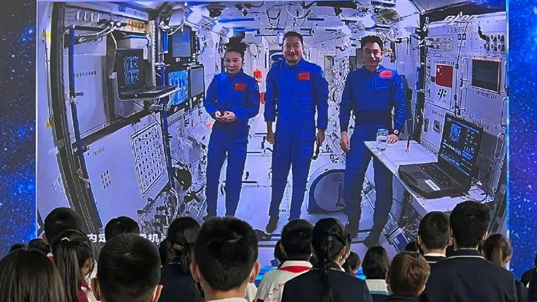

12月9日, “太空教师”翟志刚、王亚平、叶光富在中国空间站为广大青少年 带来了一场精彩的太空科普课, 中国空间站首次太空授课活动, 圆满结束!
授课中,翟志刚、王亚平、叶光富 生动介绍展示了空间站工作生活场景。
演示了微重力环境下,细胞学实验、人体运动、液体表面张力等 神奇现象 并讲解了实验背后的科学原理。
授课期间,航天员通过视频通话形式,与地面课堂师生进行了实时互动交流,宁波师生观看这场 “宇宙级浪漫”

宁波外国语学校初三10班 方舟
因为疫情，我和妈妈都居家健康观察。今天下午，我们一起见证了“天宫课堂”，妈妈是一名老师，她跟着直播同时给我讲解分析知识，让我很受启发。妈妈现在每天她都会认真耐心地给她的学生录微课，停课不停教，我也每天通过学校老师的微课在线学习，停课不停学，积极跟上学校进度。
宁波市第三中学高一年级组长 谢广寒
今天是我第一次陪伴学生看“太空授课”，看到孩子们脸上流露的好奇和自豪的表情，我深感欣慰。翟志刚、王亚平、叶光富的太空授课，既为学生开启了神奇的太空之旅，他们发出的“中国好声音”也感染和感动了青年一代。